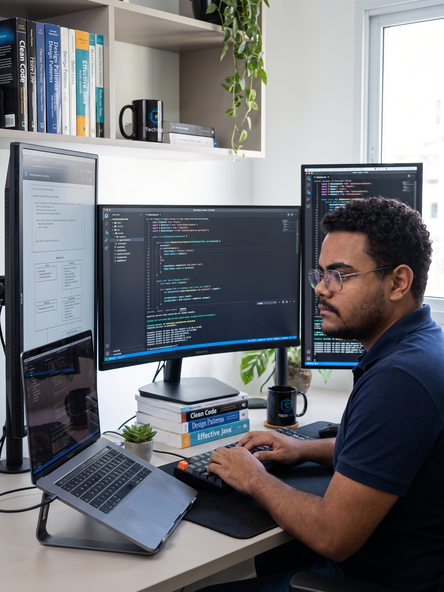

01FLUTTER · DART
Ponto Rápido
Aplicativo de gestão corporativa, com foco em uma experiência ágil e organizada para equipes.
Desenvolvedor & educador
Sou Henrique Santos, desenvolvedor de software e instrutor de tecnologia. Transformo lógica de programação e hardwares educacionais em soluções práticas.
01 — SOBRE MIM

Sou bacharel em Agrocomputação (2021) com experiência que transita entre o mercado de tecnologia aplicada e a educação. Comecei atuando na linha de frente como Analista de Implantação de Projetos e hoje atuo como Instrutor de Formação Profissional no SENAI.
Meu foco é desenvolver aplicações escaláveis e criar materiais didáticos e projetos maker de código aberto. Mais que automatizar: quero tornar a tecnologia acessível e aplicável na sala de aula e no dia a dia.
02 — PROJETOS
Uma seleção de produtos digitais e iniciativas abertas que conectam software, educação e impacto prático.
Aplicativo de gestão corporativa, com foco em uma experiência ágil e organizada para equipes.
Marketplace de eventos criado do zero, da modelagem de dados à estruturação da plataforma.
Aplicativo Flutter para marcar partidas de Truco, com placar em tempo real, desafios de Truco, efeitos sonoros e vibração.
03 — TRAJETÓRIA
Da implantação de tecnologia no campo à formação de novos profissionais.
Criação de planos de aula, guias técnicos e instrução de tecnologias industriais e educacionais.
Idealização e criação ativa de aplicações que resolvem problemas reais.
Experiência corporativa direta com implantação de tecnologia de ponta.
A base multidisciplinar que conecta o digital às aplicações do mundo real.
04 — VAMOS CONVERSAR
Vamos construir algo útil, acessível e memorável juntos.
◉ github.com/HenriqueSanttos